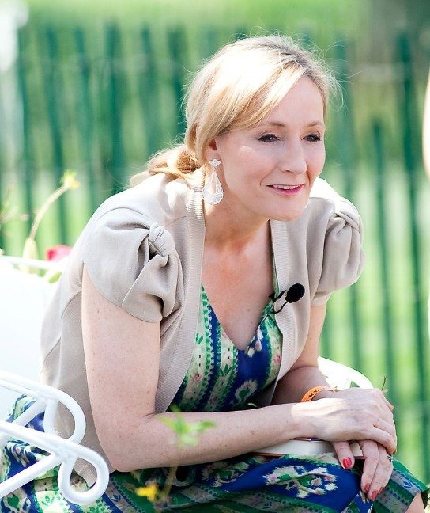

J.K. Rowling
Joanne Rowling writing under the pen names J. K. Rowling and Robert Galbraith, is a British novelist, philanthropist, film producer, television producer and screenwriter, best known for writing the Harry Potter fantasy series. The books have won multiple awards, and sold more than 500 million copies, becoming the best-selling book series in history. They have also been the basis for a film series, over which Rowling had overall approval on the scripts and was a producer on the final films in the series.
Born in Yate, Gloucestershire, England, Rowling was working as a researcher and bilingual secretary for Amnesty International when she conceived the idea for the Harry Potter series while on a delayed train from Manchester to London in 1990. The seven-year period that followed saw the death of her mother, birth of her first child, divorce from her first husband and relative poverty until the first novel in the series, Harry Potter and the Philosopher's Stone, was published in 1997. There were six sequels, of which the last, Harry Potter and the Deathly Hallows, was released in 2007. Since then, Rowling has written five books for adult readers: The Casual Vacancy (2012) and—under the pseudonym Robert Galbraith—the crime fiction novels The Cuckoo's Calling (2013), The Silkworm (2014), Career of Evil (2015), and Lethal White (2018).
Rowling has lived a "rags to riches" life story, in which she progressed from living on state benefits to being the world's first billionaire author. She lost her billionaire status after giving away much of her earnings to charity, but remains one of the wealthiest people in the world. She is the United Kingdom's bestselling living author, with sales in excess of £238M. The 2016 Sunday Times Rich List estimated Rowling's fortune at £600 million, ranking her as the joint 197th richest person in the UK. Time named her a runner-up for its 2007 Person of the Year, noting the social, moral, and political inspiration she has given her fans. In October 2010, Rowling was named the "Most Influential Woman in Britain" by leading magazine editors. She has supported charities, including Comic Relief, One Parent Families and Multiple Sclerosis Society of Great Britain, and launched her own charity, Lumos.
Source: Wikipedia, "J. K. Rowling"